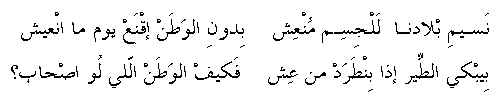

naseem eblaadna lal-jesem mon'esh
bedoon el-waTan iqna' yowm ma n-'eesh
bebky eT-Teir eTha benTarad men 'esh
fa keef el-waTan elly loo S-Haab?
The breeze of our homeland revives the body
And surely we cannot live without our homeland
The bird cries when it is thrown out of it's nest
So how is the homeland that has it's own people?
Go
back to Palestinian Songs Page
Go back
to Palestinian Folklore Page